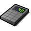
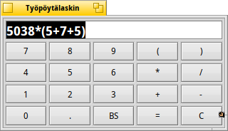

Työpöytälaskin
| Työpöytäpalkki: | ||
| Sijainti: | /boot/system/apps/DeskCalc | |
| Asetukset: | ~/config/settings/DeskCalc_settings |
Työpöytälaskin on yksinkertainen laskin, jossa on yksinkertaisuudesta huolimatta näppäriä ominaisuuksia, joita ei huomaa ensisilmäyksellä.
Työpöytälaskin ymmärtää paljon enemmän kuin sen yksinkertainen näppäimistö antaa ymmärtää.
Operaattorien , -, *, /, %, ^ sekä vakioiden pi and e lisäksi tuettuja ovat seuraavat matemaattiset funktiot:
!, acos, asin, atan, atan2, cbrt, ceil, cos, cosh, exp, floor, log, log10, pow, sin, sinh, sqrt, tan, tanh.Hiiren kakkospainike tarjoaa nämä valitsimet:
Aktivoi automaattisesti näppäimiston numerolohkon Työpöytälaskinta käynnistettäessä Vaihda asetusten "radiaanit" ja "asteet" välillä kulmamittauksen yksikkönä ALT 0 Miniminäkymätila, joka piilottaa näppäimistön numerolohkon ALT 1 Työpöytälaskimen vakionäyttö. ALT 2 Näytä lisäpainikkeita tieteislaskennalle. Mitä tulee käyttäjäsyöttöön, Työpöytälaskin on melko suvaitsevainen:
/, :, \\ tulkitaan kaikki jako-operaattoriksi,
*, x ovat kelvollisia kertolaskun merkkejä.
Ole myös tietoinen, että . ja , ovat molemmat desimaalipilkkuja, joten et saa käyttää niitä 1000-lukujen erottajina.Voit muuttaa laskimen kokoa kunnes se sopii tarkoituksiisi ja laittaa sen Kopiona työpöydälle raahaamalla ja pudottamalla se oikean alakulman symbolista. Varmista, että on aktivoitu Työpöytäpalkissa.
Näppäimistö voidaan värittää raahaa ja pudota -toiminnolla mistä värilähteestä tahansa, esimerkiksi Kuvakemaatista.
Voit siirtyä ylös ja alas entisten laskutoimitusten historiassa näppäimillä ↑ ja ↓.
Voit valita Työpöytälaskimen sisällön ja raahata ja pudottaa sen mihin tahansa sovellukseen. Tai pudotat sen Seuraaja-ikkunaan tai työpöydälle ja tekstitiedosto laskimen sisällöllä luodaan siihen.
Vielä parempaa, myös käänteinen toiminto on mahdollinen:
Luo katkelmia kuten on kuvattu laskelmiesi eri vaiheissa ja siirry takaisin niihin raahaamalla ja pudottamalla ne takaisin Työpöytälaskimeen.
Tai voit raahata ja pudottaa laskelman suoraan sähköpostista Työpöytälaskimeen.Työpöytälaskinta voidaan käyttää Pääteikkunassa. Laita vain lauseke kaksimerkkisten sulkumerkkien sisään, kuten tässä esimerkissä:
~> DeskCalc "sin(45)*(cos(12)+3.45)" 3.65365546732025461817951947270058
Huomaa: Pääteikkunassa käytettäessä Työpöytälaskin käyttää aina radiaaneja yksikkönä näissä trigonometriafunktioissa.